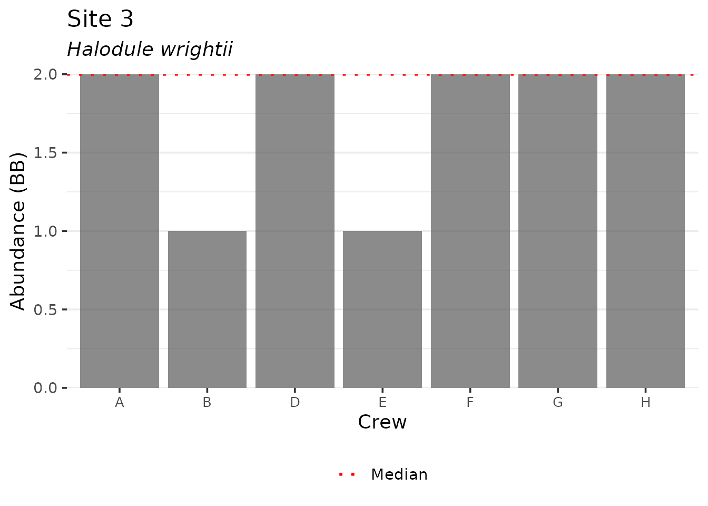
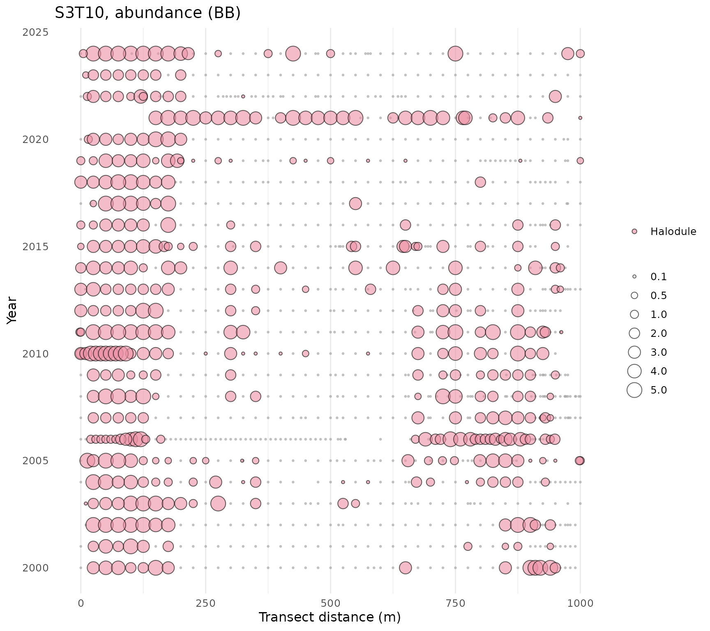
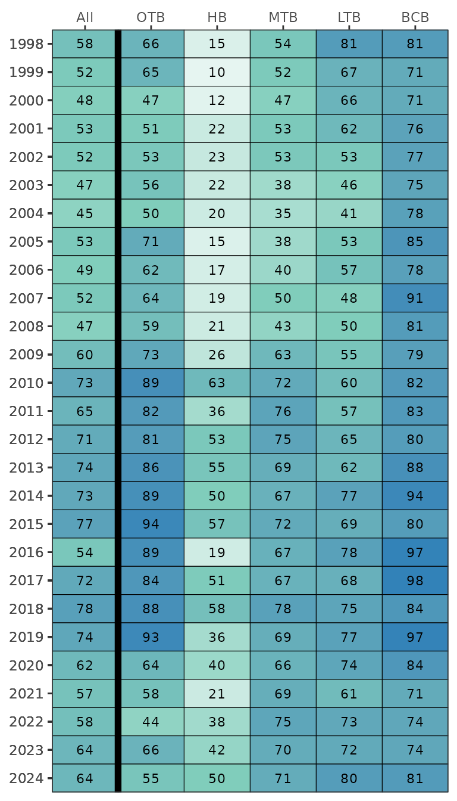

Each year, TBEP partners collect seagrass transect data at fixed locations in Tampa Bay. Data have been collected since the mid 1990s and are hosted online at the Tampa Bay Water Atlas by the University of South Florida Water Institute. Functions are available in tbeptools for downloading, analyzing, and plotting these data.
Data import and included datasets
There are two datasets included in tbeptools that show the actively monitored transect locations in Tampa Bay. The trnpts dataset is a point object for the starting location of each transect and the trnlns dataset is a line object showing the approximate direction and length of each transect beginning at each point in trnpts. Each dataset also includes the MonAgency column that indicates which monitoring agency collects the data at each transect.
trnpts
#> Simple feature collection with 65 features and 10 fields
#> Geometry type: POINT
#> Dimension: XY
#> Bounding box: xmin: -82.8089 ymin: 27.49925 xmax: -82.39305 ymax: 28.0001
#> Geodetic CRS: WGS 84
#> First 10 features:
#> SEGMENT TRANSECT TRAN_ID Metermark ID LAT_DD LONG_DD MonAgency STATUS
#> 1 1 1 S1T1 0 START 27.99498 -82.68325 EPCHC ACTIVE
#> 2 1 3 S1T3 0 START 28.00010 -82.66417 EPCHC ACTIVE
#> 3 1 5 S1T5 0 START 27.95788 -82.54663 FDEP ACTIVE
#> 4 1 6 S1T6 0 START 27.91348 -82.53282 EPCHC ACTIVE
#> 5 1 8 S1T8 0 START 27.86233 -82.56867 EPCHC ACTIVE
#> 6 1 13 S1T13 0 START 27.92428 -82.70232 EPCHC ACTIVE
#> 7 1 14 S1T14 0 START 27.85533 -82.59738 EPCHC ACTIVE
#> 8 1 15 S1T15 0 START 27.87408 -82.53098 EPCHC ACTIVE
#> 9 1 16 S1T16 0 START 27.88228 -82.62015 PCDEM ACTIVE
#> 10 1 17 S1T17 0 START 27.90498 -82.64793 PCDEM ACTIVE
#> bay_segment geometry
#> 1 OTB POINT (-82.68325 27.99498)
#> 2 OTB POINT (-82.66417 28.0001)
#> 3 OTB POINT (-82.54663 27.95788)
#> 4 OTB POINT (-82.53282 27.91348)
#> 5 OTB POINT (-82.56867 27.86233)
#> 6 OTB POINT (-82.70232 27.92428)
#> 7 OTB POINT (-82.59738 27.85533)
#> 8 OTB POINT (-82.53098 27.87408)
#> 9 OTB POINT (-82.62015 27.88228)
#> 10 OTB POINT (-82.64793 27.90498)
trnlns
#> Simple feature collection with 60 features and 6 fields
#> Geometry type: LINESTRING
#> Dimension: XYM
#> Bounding box: xmin: -82.8118 ymin: 27.49807 xmax: -82.39306 ymax: 28.0001
#> m_range: mmin: 0 mmax: 2700
#> Geodetic CRS: WGS 84
#> First 10 features:
#> OBJECTID Site Shape_Leng MonAgency ActiveYN geometry
#> 1 1 S1T1 300.1400 EPCHC YES LINESTRING M (-82.68325 27....
#> 2 5 S1T13 1102.6182 EPCHC YES LINESTRING M (-82.70232 27....
#> 3 6 S1T14 800.4500 EPCHC YES LINESTRING M (-82.59738 27....
#> 4 7 S1T15 701.0075 EPCHC YES LINESTRING M (-82.53098 27....
#> 5 8 S1T16 998.9961 PCDEM YES LINESTRING M (-82.62015 27....
#> 6 9 S1T17 2698.5773 PCDEM YES LINESTRING M (-82.64791 27....
#> 7 10 S1T18 997.5451 EPCHC YES LINESTRING M (-82.61143 27....
#> 8 12 S1T3 401.5991 EPCHC YES LINESTRING M (-82.66417 28....
#> 9 14 S1T5 457.5927 FDEP YES LINESTRING M (-82.54663 27....
#> 10 15 S1T6 398.6606 EPCHC YES LINESTRING M (-82.53282 27....
#> bearing
#> 1 116.533756
#> 2 -4.689701
#> 3 109.402541
#> 4 -85.765142
#> 5 13.913960
#> 6 -21.165576
#> 7 -123.050914
#> 8 -128.034327
#> 9 -121.861907
#> 10 -89.362036The two datasets are sf() (simple features) objects and are easily mapped with mapview() to view their locations.
cols <- c("#E16A86", "#CB7F2F", "#9F9400", "#50A315", "#00AC79", "#00AAB7", "#009ADE", "#A87BE4", "#DA65C3")
mapview(trnpts, zcol = 'MonAgency', lwd = 0, legend = F, homebutton = F, col.regions = cols) +
mapview(trnlns, zcol = 'MonAgency', homebutton = F, layer.name = 'Monitoring Agency', lwd = 4, color = cols)The transect data can be downloaded from the Water Atlas using the read_transect() function. The only required argument for this function is training, which indicates if you want to download training data or the complete dataset, i.e., training = TRUE or training = FALSE (default). In the former case, a small dataset is downloaded that includes only data collected during an annual training event. These are primarily used internally by TBEP staff to assess precision among different training crews. The data are downloaded as a JSON object and formatted internally using the read_formtransect() function. Shoot density is reported as number of shoots per square meter and is corrected for the quadrat size entered in the raw data. Abundance is reported as a numeric value from 0 -5 for Braun-Blanquet coverage estimates and blade length is in cm.
# import training data
traindat <- read_transect(training = TRUE)
# view the data
traindat
#> # A tibble: 363 × 9
#> yr Crew MonitoringAgency Site Depth Savspecies var aveval sdval
#> <int> <chr> <chr> <chr> <int> <chr> <chr> <dbl> <dbl>
#> 1 2020 CA BH L… SWFWMD 1 -46 Halodule Abundance 3 NA
#> 2 2020 CA BH L… SWFWMD 1 -46 Halodule Blade Le… 0 0
#> 3 2020 CA BH L… SWFWMD 1 -46 Halodule Short Sh… 0 0
#> 4 2020 CA BH L… SWFWMD 3 -57 Halodule Abundance 5 NA
#> 5 2020 CA BH L… SWFWMD 3 -57 Halodule Blade Le… 22 7.35
#> 6 2020 CA BH L… SWFWMD 3 -57 Halodule Short Sh… 68 20.3
#> 7 2020 CA BH L… SWFWMD 3 -54 Thalassia Abundance 1 NA
#> 8 2020 CA BH L… SWFWMD 3 -54 Thalassia Blade Le… 38.8 10.1
#> 9 2020 CA BH L… SWFWMD 3 -54 Thalassia Short Sh… 2 3.46
#> 10 2020 CA BH L… SWFWMD 5 -87 Syringodi… Abundance 4 NA
#> # … with 353 more rowsChange the training argument to FALSE to download the entire transect database. This may take a few seconds.
# import entire transct dataset as JSON
transect <- read_transect(training = FALSE)
# view the data
transect
#> # A tibble: 134,187 × 11
#> Crew MonitoringAgency Date Transect Site Depth Savspecies
#> <chr> <chr> <date> <chr> <chr> <int> <chr>
#> 1 Ali Mauer, Melis… PCDEM 2020-11-04 S5T8 0 -5 No Cover
#> 2 Ali Mauer, Melis… PCDEM 2020-11-04 S5T8 0 -5 No Cover
#> 3 Ali Mauer, Melis… PCDEM 2020-11-04 S5T8 0 -5 No Cover
#> 4 Ali Mauer, Melis… PCDEM 2020-11-04 S5T8 10 -12 Halodule
#> 5 Ali Mauer, Melis… PCDEM 2020-11-04 S5T8 10 -12 Halodule
#> 6 Ali Mauer, Melis… PCDEM 2020-11-04 S5T8 10 -12 Halodule
#> 7 Ali Mauer, Melis… PCDEM 2020-11-04 S5T8 100 -180 Syringodi…
#> 8 Ali Mauer, Melis… PCDEM 2020-11-04 S5T8 100 -180 Syringodi…
#> 9 Ali Mauer, Melis… PCDEM 2020-11-04 S5T8 100 -180 Syringodi…
#> 10 Ali Mauer, Melis… PCDEM 2020-11-04 S5T8 11 -20 Halodule
#> # … with 134,177 more rows, and 4 more variables: SeagrassEdge <dbl>,
#> # var <chr>, aveval <dbl>, sdval <dbl>The columns in the complete transect database describe the crew (Crew), the monitoring agency (MonitoringAgency), sample date (Date), transect name (Transect), the meter location for the quadrat along the transect (Site, m), depth at the site (Depth, cm), Seagrass species (Savspecies), distance of the seagrass edge on the transect (SeagrassEdge, m), the seagrass variable (var), average value of the variable (aveval), and standard deviation of the variable if appropriate (sdval).
If the raw, unformatted transect data are preferred, use the raw = TRUE argument for read_transect().
# raw transect data
transectraw <- read_transect(training = FALSE, raw = TRUE)
# view the data
transectraw
#> # A tibble: 45,039 × 46
#> IDall AssessmentYear CreatedAt Crew CountingTech SeagrassEdge Secchi Sonde
#> <int> <int> <chr> <chr> <chr> <dbl> <dbl> <lgl>
#> 1 2 1998 1998-10-15… <NA> <NA> NA NA FALSE
#> 2 2 1998 1998-10-15… <NA> <NA> NA NA FALSE
#> 3 2 1998 1998-10-15… <NA> <NA> NA NA FALSE
#> 4 2 1998 1998-10-15… <NA> <NA> NA NA FALSE
#> 5 2 1998 1998-10-15… <NA> <NA> NA NA FALSE
#> 6 2 1998 1998-10-15… <NA> <NA> NA NA FALSE
#> 7 2 1998 1998-10-15… <NA> <NA> NA NA FALSE
#> 8 2 1998 1998-10-15… <NA> <NA> NA NA FALSE
#> 9 2 1998 1998-10-15… <NA> <NA> NA NA FALSE
#> 10 2 1998 1998-10-15… <NA> <NA> NA NA FALSE
#> # … with 45,029 more rows, and 38 more variables: Weather <chr>, Hidden <lgl>,
#> # HiddenReason <lgl>, IsComplete <lgl>, QASubmittedAt <chr>,
#> # ReadyForQA <lgl>, QACompletedAt <chr>, MonitoringAgency <chr>,
#> # Transect <chr>, BaySegment <chr>, ID <int>, ObservationDate <chr>,
#> # Site <int>, Species <chr>, SpeciesAbundance <chr>, Appearance <chr>,
#> # BladeLength_1 <int>, BladeLength_2 <int>, BladeLength_3 <int>,
#> # BladeLength_4 <int>, BladeLength_5 <int>, BladeLength_Avg <dbl>, …Calculating seagrass frequency occurrence
The rest of the seagrass functions in tbeptools were developed to work with the complete database. Only the show_complot() function (see below) was developed for the training data. The rest of the functions can be used to estimate and plot frequency occurrence data.
The anlz_transectocc() function summarizes frequency occurrence for all transects and dates by collapsing species results across quadrats within each transect. Abundance and frequency occurrence are estimated as in Sherwood et al. 2017, equations 1 and 2 [1]. In short, frequency occurrence is estimated as the number of instances a species was observed along a transect divided by the number of placements along a transect and average abundance was estimated as the sum of species-specific Braun-Blanquet scores divided by the number of placements along a transect. The estimates are obtained for all seagrass species including Caulerpa spp., whereas all attached and drift algae species are aggregated.
transectocc <- anlz_transectocc(transect)
transectocc
#> # A tibble: 11,889 × 6
#> # Groups: Date, Transect [1,321]
#> Date Transect Savspecies nsites foest bbest
#> <date> <chr> <chr> <int> <dbl> <dbl>
#> 1 1997-10-11 S2T3 AA 41 0 0
#> 2 1997-10-11 S2T3 Caulerpa 41 0 0
#> 3 1997-10-11 S2T3 DA 41 0 0
#> 4 1997-10-11 S2T3 Halodule 41 0.0488 0.146
#> 5 1997-10-11 S2T3 Halophila 41 0 0
#> 6 1997-10-11 S2T3 No Cover 41 0.951 4.76
#> 7 1997-10-11 S2T3 Ruppia 41 0 0
#> 8 1997-10-11 S2T3 Syringodium 41 0 0
#> 9 1997-10-11 S2T3 Thalassia 41 0 0
#> 10 1997-10-11 S2T5 AA 34 0 0
#> # … with 11,879 more rowsThe second function, anlz_transectave(), takes the results from anlz_transectocc() and estimates annual results across major bay segments for all seagrass species by averaging frequency occurrence across transects. This function is used internally within the show_transectmatrix() function to create summary plots. The frequency occurrence estimates are also binned into categories for simple trend assessments, e.g., red < 25%, orange 25-50%, yellow 50-75%, and green > 75%. Results for specific bay segments and annual ranges can be filtered with the bay_segment and yrrng arguments.
transectave <- anlz_transectave(transectocc)
transectave
#> # A tibble: 138 × 4
#> yr bay_segment foest focat
#> <dbl> <fct> <dbl> <fct>
#> 1 1998 Tampa Bay 69.5 yellow
#> 2 1998 OTB 70.9 yellow
#> 3 1998 HB 15.2 red
#> 4 1998 MTB 57.3 yellow
#> 5 1998 LTB 80.0 green
#> 6 1998 BCB 81.5 green
#> 7 1999 Tampa Bay 62.7 yellow
#> 8 1999 OTB 66.9 yellow
#> 9 1999 HB 10.1 red
#> 10 1999 MTB 57.4 yellow
#> # … with 128 more rowsThe third function, anlz_transectavespp(), takes the results from anlz_transectocc() and estimates annual averages across major bay segments as in the last function, but results are retained for individual species. This function is used internally within the show_transectavespp() function to create summary plots. All summaries are aggregated across the selected bay segments, i.e., the default is to average by species/year across all segments. Results for an individual bay segment can be returned with the appropriate argument, e.g., by using bay_segment = 'OTB' to select only Old Tampa Bay. Results can also be filtered by specific species using the species argument, where the default is to return all. Caulerpa spp. are also included.
transectavespp <- anlz_transectavespp(transectocc)
transectavespp
#> # A tibble: 161 × 3
#> yr foest Savspecies
#> <dbl> <dbl> <fct>
#> 1 1998 0.578 total
#> 2 1998 0.362 Halodule
#> 3 1998 0.0435 Syringodium
#> 4 1998 0.247 Thalassia
#> 5 1998 0.0115 Ruppia
#> 6 1998 0 Halophila
#> 7 1998 0.0170 Caulerpa
#> 8 1999 0.516 total
#> 9 1999 0.305 Halodule
#> 10 1999 0.0701 Syringodium
#> # … with 151 more rowsResults for individual bay segments from anlz_transectavespp() can be retained by setting the by_seg argument to TRUE. Note that totals are not returned in this case.
transectavespp <- anlz_transectavespp(transectocc, by_seg = TRUE)
transectavespp
#> # A tibble: 805 × 5
#> yr bay_segment Savspecies foest nsites
#> <dbl> <fct> <fct> <dbl> <int>
#> 1 1998 BCB Caulerpa 0 96
#> 2 1998 BCB Halodule 0.613 96
#> 3 1998 BCB Halophila 0 96
#> 4 1998 BCB No Cover 0.190 96
#> 5 1998 BCB Ruppia 0 96
#> 6 1998 BCB Syringodium 0 96
#> 7 1998 BCB Thalassia 0.304 96
#> 8 1998 HB Caulerpa 0 285
#> 9 1998 HB Halodule 0.147 285
#> 10 1998 HB Halophila 0 285
#> # … with 795 more rowsPlotting results
There is one plotting function for the training data. The show_compplot() function is used to compare training data between crews for a selected species (species argument) and variable (varplo argument).
show_compplot(traindat, yr = 2020, site = '1', species = 'Halodule', varplo = 'Abundance', base_size = 14)
The rest of the plotting functions work with the complete transect data. Data for an individual transect can be viewed with the show_transect() function by entering the transect (site) number, species (one to many), and variable to plot. The plot shows relative values for the selected species and variable by distance along the transect (x-axis) and year of sampling (y-axis). The plots provide an overall summary of temporal and spatial changes in the selected seagrass metric for an individual location.
show_transect(transect, site = 'S3T10', species = 'Halodule', varplo = 'Abundance')
The plot can also be produced as a plotly interactive plot by setting plotly = TRUE inside the function Note that the size legend is removed in this option, but sizes can be viewed on mouseover of each point.
show_transect(transect, site = 'S3T10', species = 'Halodule', varplo = 'Abundance', plotly = T)The show_transect() function can also be used to plot multiple species. One to many species can be provided to the species argument.
show_transect(transect, site = 'S3T10', species = c('Halodule', 'Syringodium', 'Thalassia'), varplo = 'Abundance')
The plots can also be separated into facets for each species using facet = TRUE. This is useful to reduce overplotting of multiple species found at the same location.
show_transect(transect, site = 'S3T10', species = c('Halodule', 'Syringodium', 'Thalassia'), varplo = 'Abundance', facet = TRUE)
The show_transectsum() function provides an alternative summary of data at an individual transect. This plot provides a quick visual assessment of how frequency occurrence or abundance for multiple species has changed over time at a selected transect. Unlike show_transect(), the plot shows aggregated results across quadrats along the transect and uses summarized data from the anlz_transectocc() function as input.
show_transectsum(transectocc, site = 'S3T10')A summary matrix of frequency occurrence estimates across all species can be plotted with show_transectmatrix(). This uses results from the anlz_transectocc() and anlz_transectave() functions to estimate annual averages by bay segment. The continuous frequency occurrence estimates are binned into color categories described above, as in Table 1 in [2].
show_transectmatrix(transectocc)
The default color scheme is based on arbitrary breaks at 25, 50, and 75 percent frequency occurrence. These don’t necessarily translate to any ecological breakpoints. Use neutral = TRUE to use a neutral and continuous color palette.
show_transectmatrix(transectocc, neutral = T)
The matrix can also be produced as a plotly interactive plot by setting plotly = TRUE inside the function.
show_transectmatrix(transectocc, plotly = T)Time series plots of annual averages of frequency occurrence estimates by each species can be shown with the show_transectavespp() function. By default, all estimates are averaged across all bay segments for each species. The plot is a representation of Figure 2 in [2].
show_transectavespp(transectocc)
Results for individual segments and species can be returned with the bay_segment and species arguments. Use the argument total = FALSE to omit the total frequency occurrence from the plot.
show_transectavespp(transectocc, bay_segment = 'LTB', species = c('Syringodium', 'Thalassia'), total = FALSE)
The plot can also be produced as a plotly interactive plot by setting plotly = TRUE inside the function.
show_transectavespp(transectocc, bay_segment = 'LTB', species = c('Syringodium', 'Thalassia'), plotly = T)As an alternative to plotting the species averages over time with show_transectavespp(), a table can be created by setting asreact = TRUE. Filtering options that apply to the plot also apply to the table, e.g., filtering by the four major bay segments and specific year ranges. Also note that the totals are not returned in the table.
show_transectavespp(transectocc, asreact = T, bay_segment = c('HB', 'OTB', 'MTB', 'LTB'), yrrng = c(2006, 2012))References
[1] E. Sherwood, H. Greening, J.O.R. Johansson, K. Kaufman, G. Raulerson, Tampa Bay (Florida, USA): Documenting Seagrass Recovery since the 1980’s and Reviewing the Benefits, Southeastern Geographer. 57 (2017) 294–319. https://doi.org/10.1353/sgo.2017.0026.
[2] R. Johansson, Seagrass Transect Monitoring in Tampa Bay: A Summary of Findings from 1997 through 2015, Tampa Bay Estuary Program, St. Petersburg, Florida, 2016. https://drive.google.com/file/d/1Z_8L9sYQWSl1hon1tP1Y8zBo7MHQK9zC/view?usp=drivesdk.